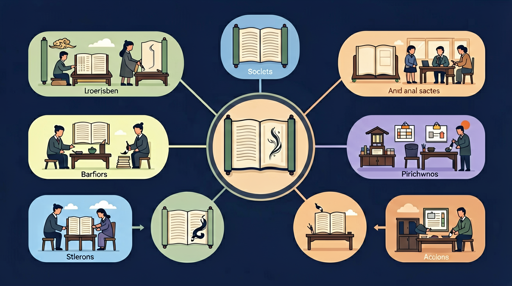

🔴 因果：因为…所以…（有原因就有结果）
🟢 条件：只要/只有/如果…就/才…（有条件才成立）
🔵 递进：不但…而且…（越说越强）
🟠 选择：要么…要么…（二选一或多选一）
🟣 转折：虽然…但是…（前后相反）
🟡 并列：既…又…（同时做两件事）
"虽然"一定要配"但是"，"因为"一定要配"所以"，别单独使用！
多用"不但…而且…"和"虽然…但是…"，能让文章逻辑更严密，表达更有力！
读文章时找到关联词，就能快速理解句子之间的逻辑关系！
每天用一种关联词造3个句子，坚持一周，你会发现写作越来越流畅！
给我出5道关联词填空题，我来选择正确的关联词，你帮我判断并解释为什么。
📌 你可以把上面的内容复制给 AI 助手（如 DeepSeek、ChatGPT），开始互动练习！
回忆：今天学了哪些关键词和规则？试着说出来。
用自己的话解释今天学的核心概念，不看书能说清楚吗？
用今天的知识解决一个实际问题，或写一个新例子。
把今天的知识与已有知识联系起来：有什么共同点？有什么区别？能不能自己创造一道新题？
先独立作答，再点选项查看对错与错因。
下列句子关联词使用正确的是
辩论稿中'____你带手机进校园，____会被没收'空缺处应填
下列复句类型与其他三项不同的是
完成句子：____天气很冷，____同学们依然坚持晨跑。（填转折关系关联词）
答案：虽然...但是...
前后分句是转折关系
辩论稿中'____学校允许带手机，____可能影响学习'应补充____关系的关联词
答案：假设
该句表达假设情况下的结果
关于复句关联词说法正确的是
收集正反双方发言中的复句，分类统计关联词类型
❓ 为什么我写的句子总像几个短句拼凑的？
❓ 老师说关联词用错了会改变意思，到底怎么用才对？
❓ 背了好多关联词，一到写作文还是只会用'因为所以'怎么办？
学完这一课，这些问题你都能自信地回答。
像拆乐高一样分离复句中的分句
关联词是分句间的'桥梁说明书'
对比'虽然但是'与'因为所以'的坡度差异
用思维气泡图呈现分句关系
把课文复句结构用到日记里
✅ 转折关系只能用'但是/却'配对
💡 混淆因果与转折逻辑
✅ 递进关系必须双分句完整
💡 未形成完整逻辑链
And：学生已掌握简单句的构成
But：不理解多个动作如何连成完整事件
Therefore：建立复句概念框架
复句就像用乐高积木搭城堡，两个以上简单句通过连接词组合。比如『我先写完作业（积木A），然后才能看电视（积木B）』，用『然后』这个连接件把两件事串起来。注意每个分句都要有完整的主谓结构哦！
🌍 妈妈常说：『把书包整理好（分句1），否则明天会忘带课本（分句2）』，这就是用『否则』连接的假设复句。
哪个是正确复句？
And：知道复句需要连接词
But：分不清『但是』『而且』等词的用法
Therefore：掌握常见逻辑关系词
连接词是复句的交通警察！『虽然...但是...』像红绿灯（转折关系），『不但...而且...』像加速带（递进关系）。例如：『小明不但完成了数学作业（分句1），而且还多做了3道奥数题（分句2）』，『不但...而且...』强调后者程度更深。
🌍 体育课时老师说：『如果认真做操（条件），就奖励5分钟自由活动（结果）』，这是用『如果...就...』表示条件关系。
选合适的连接词：『___风很大，___我们坚持晨跑』
And：能识别标准复句
But：不会调整分句顺序
Therefore：培养句式变换能力
复句像变形金刚，分句顺序可以调换但意思不变！原句『等雨停了（分句1），我们就去公园（分句2）』可以变成『我们就去公园（分句2），等雨停了（分句1）』。不过要注意：带『因为』的分句通常在前，比如『因为今天35度（分句1），所以要开空调（分句2）』不能倒过来哦！
🌍 看天气预报时说：『除非带伞（条件），否则会淋湿（结果）』，也可以说『会淋湿（结果），除非带伞（条件）』。
哪组复句意思相同？
And：掌握基础复句结构
But：难以在长文中快速识别
Therefore：提升实际语用能力
当复句侦探要抓三个线索：1.找连接词（但是/所以等）2.数主谓结构（至少两个）3.查逻辑关系。比如『虽然妈妈买了6个苹果（分句1），但是弟弟吃了4个（分句2），所以只剩2个（分句3）』，这是三层复句，用『虽然...但是...所以...』连接。
🌍 班级公约写着：『只要每天阅读30分钟（条件），就能获得1枚积分章（结果），不过周末要读满1小时（例外）』，包含条件和转折关系。
这段话包含几个复句？『起床晚了，没吃早餐。虽然下雨，但没迟到。』